Wingman AI · Drone control app for Steam Deck
Designing for the operator’s hands, not just the screen
- Role
- Product Designer
- Team
- Worked alongside the Lead Product Designer and the engineering team
- Scope
- App audit, feature mapping, flows, visual design, design system, and developer handoff
- Timeline
- Four months, November 2024 to February 2025
- Platform
- Steam Deck (Linux)
- Status
- Design implemented in the app
Wingman AI builds autonomous drones for the defence and security sector that monitor, track, and scan facilities, so teams can collect visual data without putting people in danger. I redesigned the app operators use to fly them as it moved from Samsung tablets to the Steam Deck.

The challenge
Operators flew the drones with an app on Samsung tablets. Moving to the Steam Deck changed the hardware underneath the app: a smaller screen, held in both hands, with joysticks, triggers, and buttons around it.
The existing interface was not ready for that. Its elements were too small to read and use on the new screen, and controls were not placed for the way operators hold the device. The drone had also gained new capabilities that the app needed to support.
The task was to refine the interface for clear, readable visuals, close functional gaps, and add key features, while keeping disruption for operators to a minimum.
01
Too small to use
Text and touch targets designed for a tablet did not hold up on the Steam Deck screen.
02
Not built for the hands
Placements did not account for how operators hold the controller with both hands.
03
New capabilities
Features such as the distance sensor needed a place in the interface.
My role
I worked on the redesign together with the Lead Product Designer, from feature mapping and flow exploration to visual design, accessibility improvements, and internal testing.
Design end to end
Designed core screens, refined user flows, and optimised the interface for clarity and speed.
Engineering partnership
Validated technical feasibility with engineering, tested live on the device, and managed the complete developer handoff.
Design system
Revamped key components and tightened the token structure, so components and variants were easier to fine-tune.
Microcopy
Polished product copy and notifications to give operators clearer guidance.
Four-month roadmap
01
App audit
02
Feature mapping
03
Features and flows refinement
04
Live testing and validation
05
Design system update
06
Developer handoff and finalisation
November 2024 to February 2025.
Scope
Validating the main features and functionality was the primary goal. The scope covered the home screen, first-person view, map view, target tracking, the distance and hit sensors, notifications, the gallery, and supporting capabilities such as the controller manual and drone selection.
A home screen at the app start
I introduced a home screen as the first thing operators see. It brings the critical entry points together, balanced with open space: missions and the gallery, resuming the last flight, the user manual, picking a drone, and Wi-Fi, settings, and shut down.

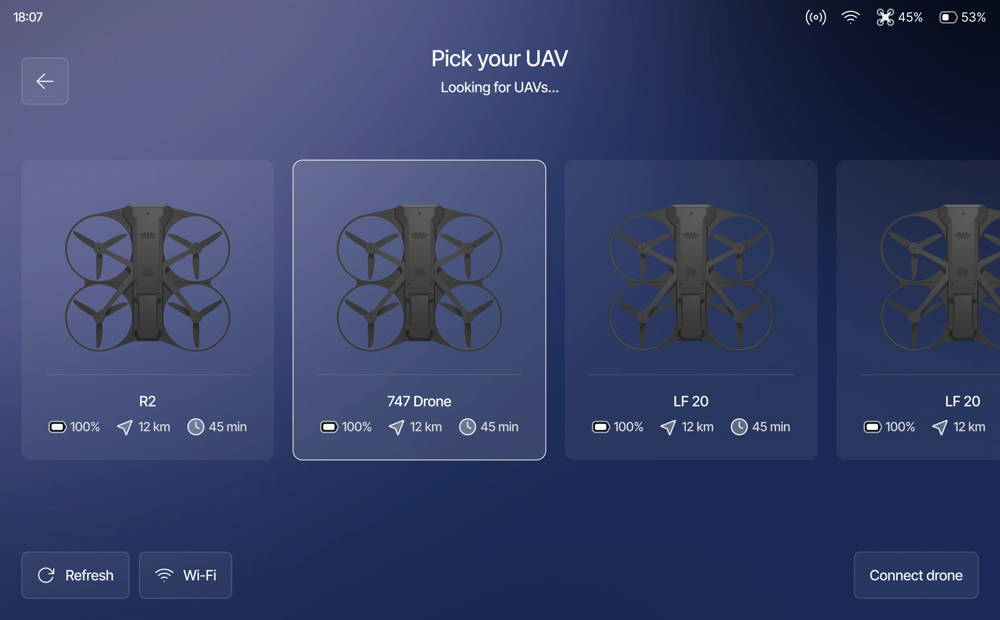
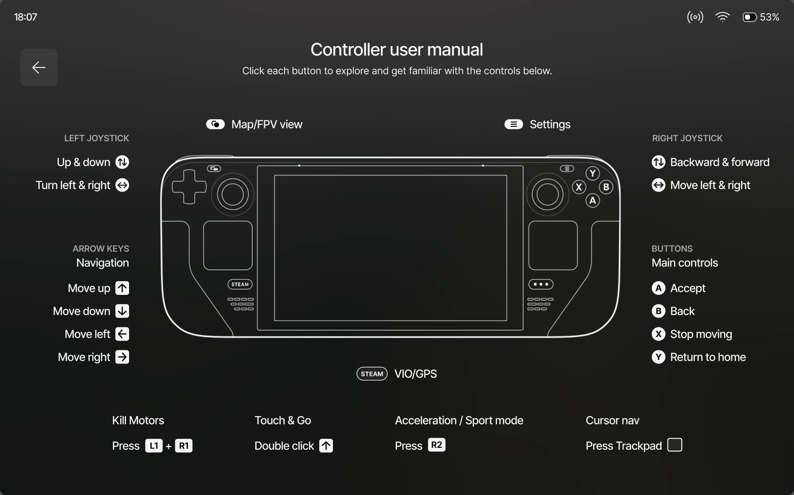
First-person view
Since most controls live on the physical controller, we prioritised essential on-screen information and gave as much of the screen as possible to the camera.
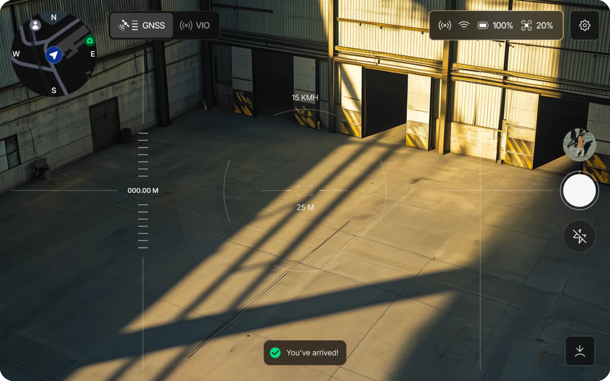
Distance and hit sensors
The drone gained a new distance sensor. I made it visible in the app so operators can track proximity with more confidence in confined spaces: the edges of the camera view glow in the direction of a nearby obstacle, and the colour shows how close it is.
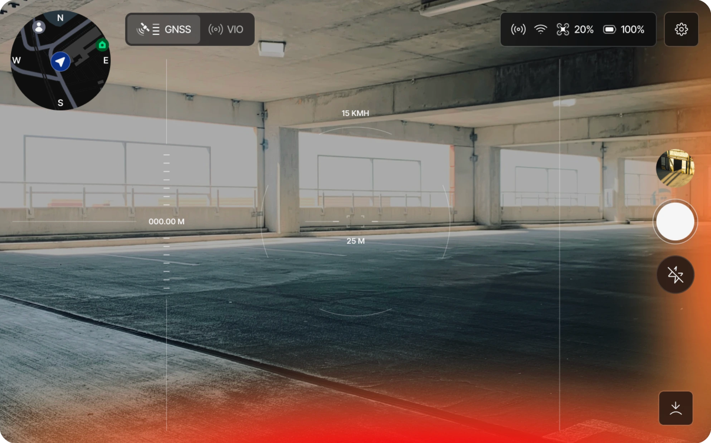
0 to 0.5 m
Red: too close
0.5 to 1.5 m
Orange: caution
More than 1.5 m
Blue: safe distance
Hit sensor by direction
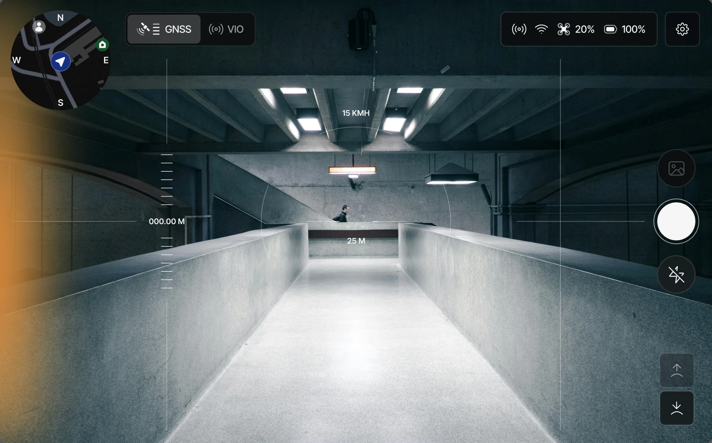
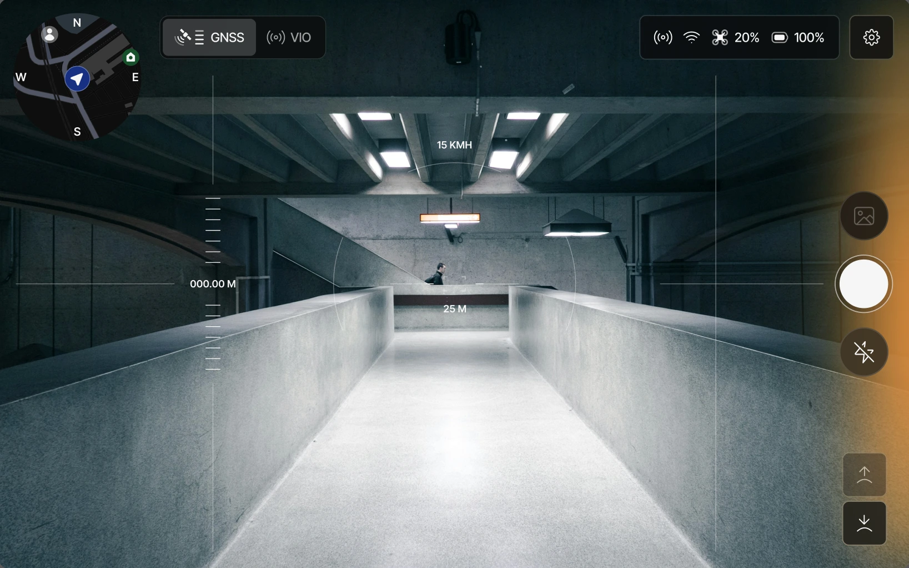
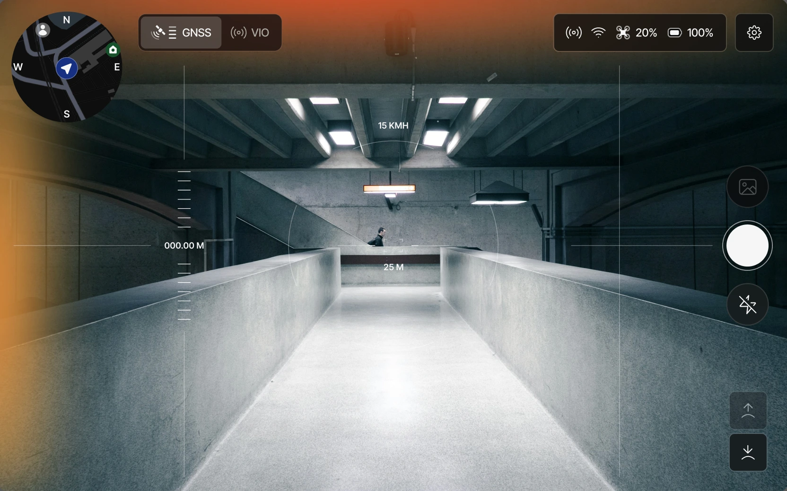
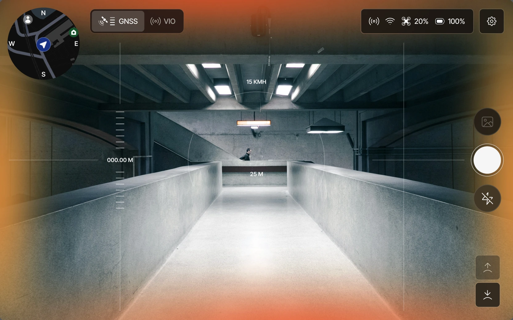
Target tracking and map view
Target tracking marks the tracked object in the camera view with its distance. The map view shows the drone’s position and flight mode, and swaps with the camera feed, which moves into a small round preview.
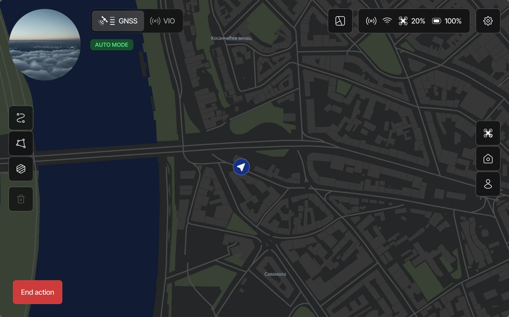
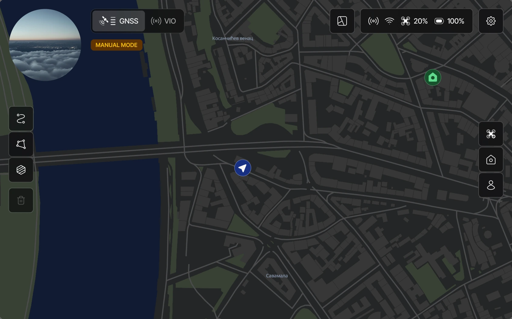
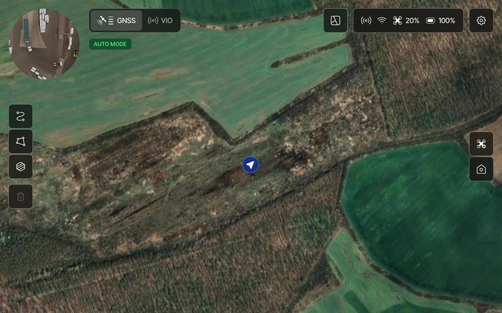
Notifications and gallery
Notifications tell operators what is happening and what to do next, in short, plain language, from a low battery to a lost connection. The gallery collects mission recordings and photos per drone.
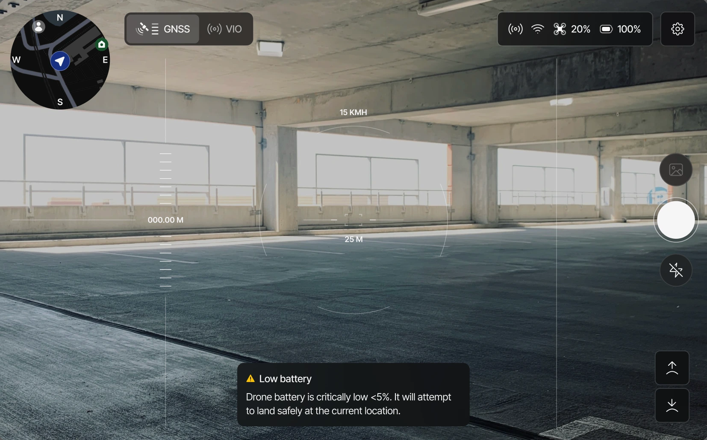
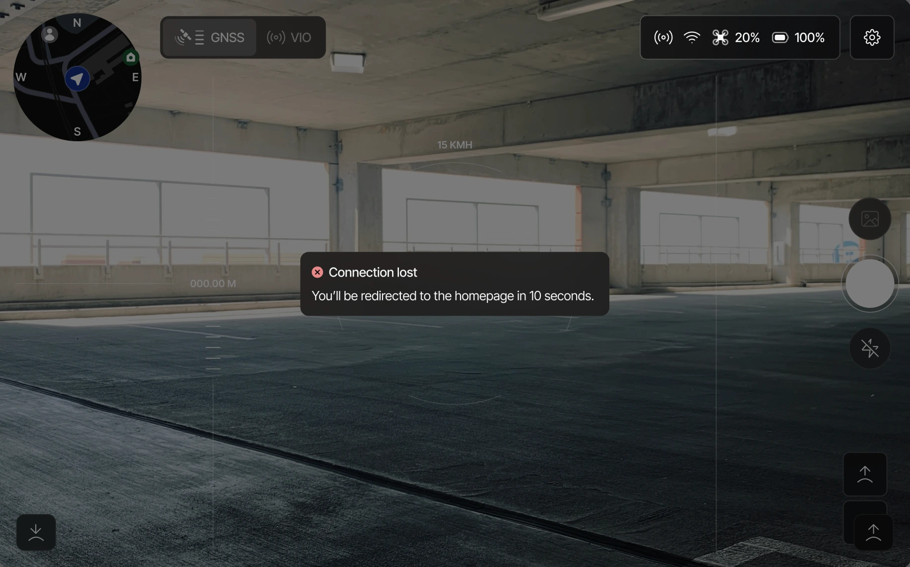
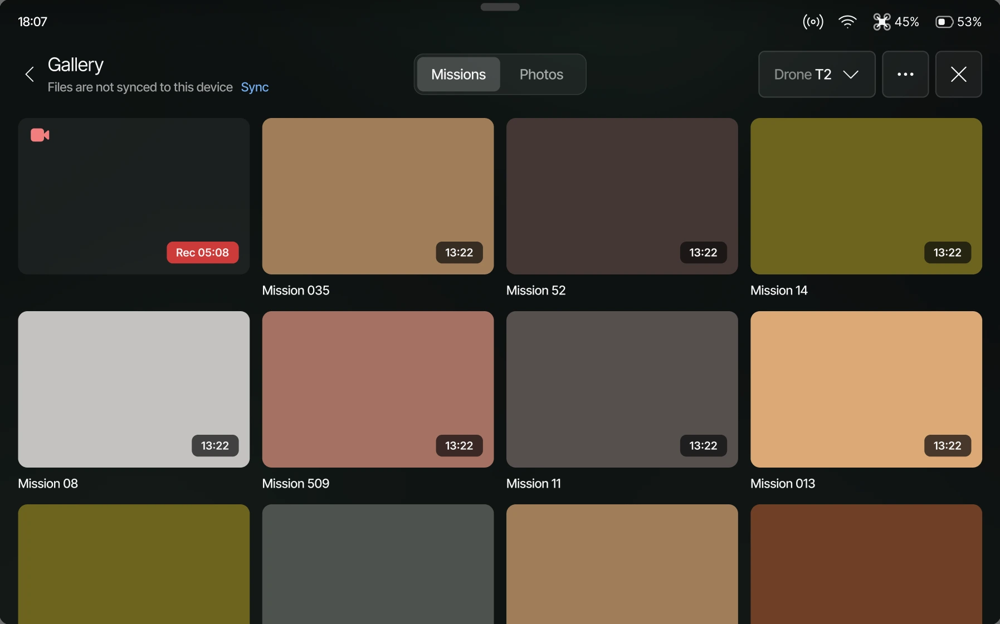
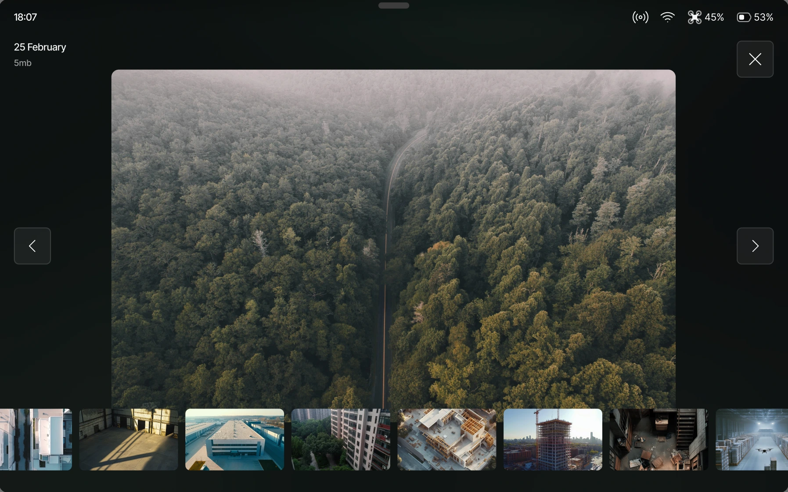
Testing on the device
With Steam Deck devices ready, I could test continuously on the real hardware using Figma Mirror. I often visited the startup’s office to demo the latest design updates and gather fast, actionable feedback from the core team.
The team also had a facility where we could set up obstacles and fly the drone, so features such as the distance sensor could be tried in real conditions, not only on screen.
A tighter design system
Toward the end of the project, I used the remaining time to lift the UI components and the app’s visual quality, an area that is often overlooked in this industry. A tighter token structure made fine-tuning components and variants much easier.

Results and next steps
The redesign is in the app today. Compared with the previous version, the interface is more visible and legible on the Steam Deck, and the new features have a clear place in it. Many rounds of internal testing helped confirm the outcome for both accessibility and functionality.
Working closely with engineering was one of the most rewarding parts of the project. With limited time, we set some alternative concepts and explorations aside.
Next, I would deepen testing with operators on the existing features, find opportunities for improvement, and surface more real-time insights and interactive components that add value in flight.